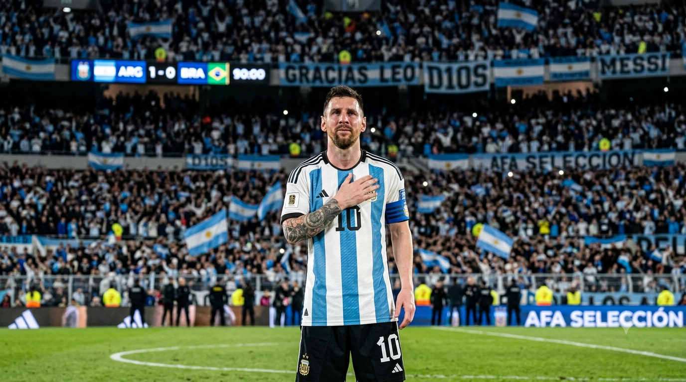

আন্তর্জাতিক ফুটবলকে বিদায় জানালেন মেসি, শেষ হলো আর্জেন্টিনার হয়ে দুই দশকের মহাকাব্য

বিশ্ব ফুটবলে শেষ হলো একটি দীর্ঘ ও গৌরবময় অধ্যায়। আর্জেন্টিনার কিংবদন্তি লিওনেল মেসি আন্তর্জাতিক ফুটবল থেকে অবসরের ঘোষণা দিয়েছেন। ৩৯ বছর বয়সে জাতীয় দলের জার্সি তুলে রাখার সিদ্ধান্ত জানিয়ে আবেগঘন বার্তা দিয়েছেন আর্জেন্টিনার অধিনায়ক।
দুই দশকের বেশি সময় আর্জেন্টিনার হয়ে মাঠ মাতানোর পর মেসির এই সিদ্ধান্তে বিশ্বজুড়ে ফুটবলপ্রেমীদের মধ্যে নেমে এসেছে আবেগ। ২০০৫ সালে জাতীয় দলে অভিষেকের পর থেকে আর্জেন্টিনার ফুটবলের সঙ্গে মেসির নাম এমনভাবে জড়িয়ে গেছে যে তাঁর বিদায়কে একটি যুগের সমাপ্তি হিসেবেই দেখছেন সমর্থকরা।
বিশ্বকাপের পরই সিদ্ধান্ত
২০২৬ বিশ্বকাপের ফাইনালে স্পেনের কাছে ১-০ গোলে হারের পরই আন্তর্জাতিক ফুটবল থেকে সরে দাঁড়ানোর সিদ্ধান্ত নেন মেসি। বিশ্বকাপের সেই ফাইনাল তাঁর জন্য কাঙ্ক্ষিত রূপকথার সমাপ্তি এনে দিতে পারেনি। তবে তার আগেই আর্জেন্টিনার হয়ে তিনি বিশ্ব ফুটবলের সবচেয়ে বড় সাফল্য অর্জন করেছেন।
২০২২ সালের কাতার বিশ্বকাপে আর্জেন্টিনাকে চ্যাম্পিয়ন করার মাধ্যমে মেসি তাঁর দীর্ঘদিনের স্বপ্ন পূরণ করেন। এরপর ২০২৪ সালেও কোপা আমেরিকার শিরোপা জেতে আর্জেন্টিনা।
আর্জেন্টিনার হয়ে মেসির রেকর্ড
জাতীয় দলের হয়ে মেসি খেলেছেন ২০৭টি ম্যাচ এবং করেছেন ১২৫টি গোল। দুটি সংখ্যাই আর্জেন্টিনার ইতিহাসে সর্বোচ্চ। আন্তর্জাতিক ক্যারিয়ারে তিনি শুধু গোলদাতা হিসেবেই নয়, অধিনায়ক ও সৃষ্টিশীল খেলোয়াড় হিসেবেও দলের অন্যতম প্রধান শক্তি ছিলেন।
মেসির আন্তর্জাতিক ক্যারিয়ারের বড় অর্জনগুলোর মধ্যে রয়েছে—
- 🏆 ২০২২ বিশ্বকাপ চ্যাম্পিয়ন
- 🏆 ২০২১ কোপা আমেরিকা চ্যাম্পিয়ন
- 🏆 ২০২৪ কোপা আমেরিকা চ্যাম্পিয়ন
- 🏆 ২০২২ ফাইনালিসিমা জয়
- 🥇 ২০০৮ অলিম্পিক স্বর্ণপদক
- ⚽ আর্জেন্টিনার সর্বোচ্চ গোলদাতা
- 👕 আর্জেন্টিনার সর্বোচ্চ ম্যাচ খেলা খেলোয়াড়
দীর্ঘ অপেক্ষার পর এসেছিল সাফল্য
মেসির আন্তর্জাতিক ক্যারিয়ারের শুরুটা এতটা সহজ ছিল না। দীর্ঘ সময় ধরে আর্জেন্টিনার হয়ে বড় কোনো আন্তর্জাতিক শিরোপা জিততে না পারায় তাঁকে নানা সমালোচনার মুখে পড়তে হয়েছিল।
২০১৪ বিশ্বকাপের ফাইনালে জার্মানির কাছে হারের পাশাপাশি কোপা আমেরিকার একাধিক ফাইনালে পরাজয় মেসির ক্যারিয়ারে হতাশার অধ্যায় তৈরি করেছিল।
২০১৬ সালে কোপা আমেরিকার ফাইনালে হারের পর একবার আন্তর্জাতিক ফুটবল থেকে অবসরের ঘোষণা দিয়েছিলেন মেসি। পরে সিদ্ধান্ত পরিবর্তন করে আবার জাতীয় দলে ফিরে আসেন। সেই প্রত্যাবর্তনের পরই আসে তাঁর ক্যারিয়ারের সবচেয়ে সফল সময়।
২০২১ থেকে বদলে যায় গল্প
২০২১ সালের কোপা আমেরিকা ছিল মেসির জন্য একটি বড় মোড়। ব্রাজিলের বিপক্ষে ফাইনালে জয়ের মাধ্যমে আর্জেন্টিনার হয়ে প্রথম বড় আন্তর্জাতিক ট্রফি জেতেন তিনি।
এরপর ২০২২ সালের কাতার বিশ্বকাপ। পুরো টুর্নামেন্টজুড়ে অসাধারণ পারফরম্যান্স করে আর্জেন্টিনাকে বিশ্বচ্যাম্পিয়ন করেন মেসি। সেই সাফল্যের মাধ্যমে তাঁর আন্তর্জাতিক ক্যারিয়ারের সবচেয়ে বড় অপূর্ণতাও পূরণ হয়।
২০২৪ সালে আবারও কোপা আমেরিকা জিতে আর্জেন্টিনা। ফলে জাতীয় দলের হয়ে মেসির শেষ কয়েকটি বছর পরিণত হয় সাফল্যের এক অসাধারণ অধ্যায়ে।
শেষটা হলো আবেগে
আন্তর্জাতিক ফুটবল ছাড়ার ঘোষণা দিতে গিয়ে মেসি জানান, সিদ্ধান্তটি তাঁর জন্য কষ্টের হলেও তিনি মনে করছেন সময় এসেছে নতুন প্রজন্মকে সুযোগ দেওয়ার।
জাতীয় দলের হয়ে খেলার সুযোগকে তিনি নিজের জীবনের অন্যতম বড় গর্ব হিসেবে দেখেছেন। দীর্ঘ ক্যারিয়ারে আর্জেন্টিনার জার্সির জন্য নিজের সর্বোচ্চটা দেওয়ার কথাও জানিয়েছেন তিনি।
মেসির বিদায়ের খবর ছড়িয়ে পড়ার পর আর্জেন্টিনায় সমর্থকদের মধ্যে ব্যাপক আবেগ দেখা গেছে। সতীর্থ ও সাবেক সতীর্থরাও সামাজিক যোগাযোগমাধ্যমে তাঁকে শ্রদ্ধা ও ভালোবাসায় বিদায় জানিয়েছেন।
মেসি কি পুরো ফুটবল ছাড়ছেন?
না। মেসির অবসরটি আন্তর্জাতিক ফুটবল থেকে। ক্লাব ফুটবল থেকে অবসরের ঘোষণা তিনি দেননি। তিনি যুক্তরাষ্ট্রের ক্লাব ইন্টার মায়ামির হয়ে ক্লাব ফুটবলে খেলছেন এবং তাঁর ক্লাব ক্যারিয়ার চালিয়ে যাওয়ার পরিকল্পনা রয়েছে।
অর্থাৎ আর্জেন্টিনার জার্সিতে আর মেসিকে দেখা না গেলেও ক্লাব ফুটবলে তাঁর খেলা চালিয়ে যাওয়ার সম্ভাবনা রয়েছে।
মেসির উত্তরাধিকার
লিওনেল মেসির আন্তর্জাতিক ক্যারিয়ার শুধু পরিসংখ্যান দিয়ে বিচার করা কঠিন। দীর্ঘ হতাশা, সমালোচনা এবং ব্যর্থতার পর তিনি শেষ পর্যন্ত আর্জেন্টিনাকে বিশ্বকাপ জিতিয়েছেন এবং দেশের ফুটবল ইতিহাসে নিজের জায়গা স্থায়ী করেছেন।
আর্জেন্টিনার হয়ে তাঁর ২০৭ ম্যাচ ও ১২৫ গোল, বিশ্বকাপ জয় এবং একাধিক আন্তর্জাতিক শিরোপা তাঁকে দেশটির ফুটবল ইতিহাসের অন্যতম সেরা খেলোয়াড় হিসেবে প্রতিষ্ঠিত করেছে।
২০২৬ বিশ্বকাপের ফাইনালে স্পেনের কাছে পরাজয় দিয়ে তাঁর আন্তর্জাতিক ক্যারিয়ারের শেষ ম্যাচটি হয়তো কাঙ্ক্ষিত রূপকথার মতো হয়নি। কিন্তু তার আগেই মেসি এমন একটি উত্তরাধিকার তৈরি করে গেছেন, যা ফুটবল ইতিহাসে দীর্ঘদিন স্মরণীয় থাকবে।
শেষ হলো একটি যুগ
একসময় যে মেসিকে আন্তর্জাতিক শিরোপা না জেতার কারণে সমালোচনা সহ্য করতে হয়েছিল, সেই মেসিই শেষ পর্যন্ত বিশ্বকাপ হাতে নিয়ে আর্জেন্টিনার মানুষের নায়ক হয়ে বিদায় নিলেন।
আর্জেন্টিনার জার্সিতে তাঁর শেষ অধ্যায় হয়তো বেদনার, কিন্তু পুরো গল্পটি গৌরবের।
লিওনেল মেসি বিদায় নিলেন আন্তর্জাতিক ফুটবল থেকে—কিন্তু আর্জেন্টিনার ফুটবল ইতিহাসে তাঁর নাম থেকে যাবে চিরকাল।